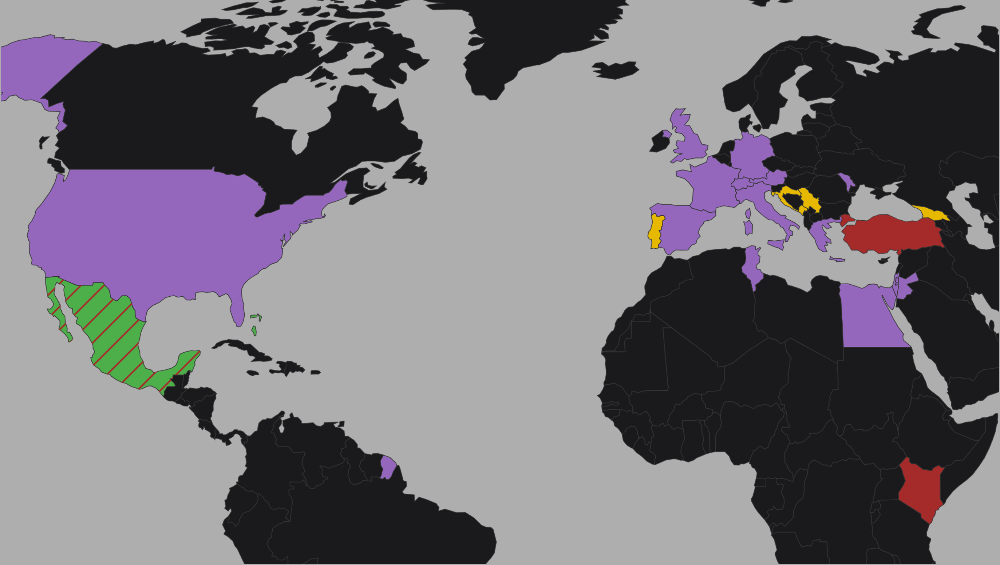

Color the map based on where you've been or plan to go!
Upload your lists to create a travel map (instructions below) — everything runs locally in your browser, and nothing is saved or shared.
Drag-like with the arrow buttons to reorder; adjust colors if you like.
.txt file with one country per line.USA, FRA, JPN)
or the country name (e.g. United States of America, France, Japan).
USA
CAN
MEX
BRA
.txt file with either full names (California, New York)
or USPS codes (CA, NY, WI).
“You’re off to Great Places! Today is your day! Your mountain is waiting, so… get on your way!”
— Dr. Seuss, Oh, the Places You’ll Go!